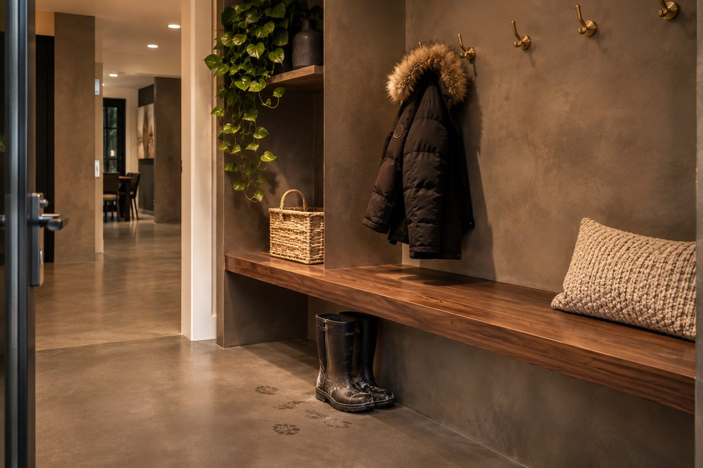
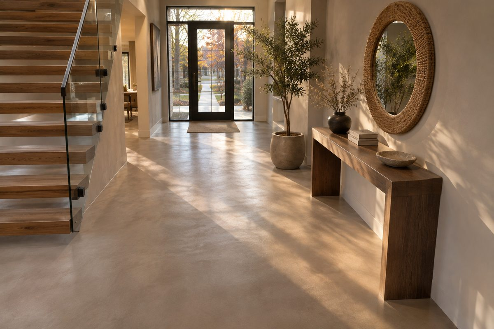
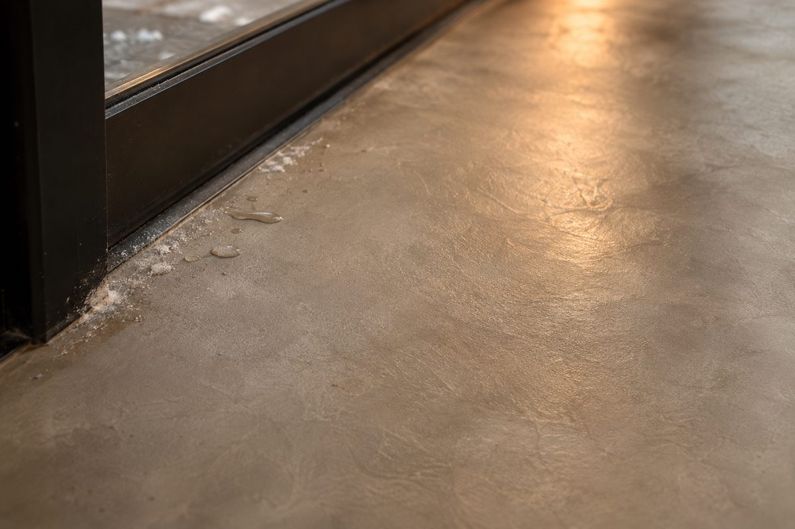

The entry is the hardest-working floor in a GTA house and usually the most neglected. It is 30 to 90 square feet that carries every pair of boots, every bag of groceries and every grain of winter road salt straight into the home. Builders put cheap porcelain tile there, grout lines and all, and homeowners spend years scrubbing white salt haze out of them.
Microcement turns that around. It is a thin mineral coating, 2–3 mm, troweled by hand and sealed with a floor-grade protective system. There are no grout lines to trap salt and grit, and it runs straight into the hallway, up the stairs or into a mudroom nook without a single transition strip. Across Toronto, Mississauga and Vaughan, entryways are now one of the fastest-growing interior jobs we quote.
Why the Entryway Is Where Microcement Earns Its Keep
No grout means no salt trap. Winter salt is abrasive and it wicks into porous grout. A sealed, continuous surface wipes clean with a damp mop instead of a toothbrush.
One surface, no transitions. The floor carries from the front door to the hallway, powder room or mudroom in the same finish. The whole main floor reads larger and calmer.
Thin build, no demolition. At 2–3 mm, microcement can often go over existing tile, which matters at the front door where a thicker floor would clash with the door sweep and threshold.
It hides real life. Hand-troweled tonal movement camouflages a scuff far better than a flat, uniform colour does. Dark flat porcelain shows every dry salt line; a mottled mushroom or greige microcement does not.
“The tile at our front door was always white with salt by February. We switched to a seamless floor and a damp mop does the job in two minutes.”
— Artisan Coat client, Vaughan, 2026
Microcement Entryway Floor Cost in Toronto (2026)
Interior microcement floors in the GTA run roughly $18–$28 per square foot installed. Entries sit toward the higher end per foot because they are small, heavily detailed around the door and stairs, and need the hardest sealer package. The figures below are typical for Toronto; your quote depends on the substrate and how far the floor runs.
| Scope | Installed Cost (GTA, 2026) | Typical Timeline |
|---|---|---|
| Small entry, 35–50 sq ft | $1,400 – $2,400 | 2 – 3 days |
| Standard foyer, 60–90 sq ft | $2,200 – $3,800 | 3 – 4 days |
| Foyer plus hallway, 120–180 sq ft | $3,600 – $6,200 | 4 – 5 days |
| Add a mudroom bench wall wrap | + $1,200 – $2,400 | + 1 – 2 days |
For comparison, ripping out old tile and laying new porcelain in a Toronto foyer usually runs $2,500–$5,000 once demolition, tile, setting materials and labour are counted. Microcement lands in the same bracket, avoids the demolition mess and has no grout to maintain.

How an Entry Floor Is Built to Survive Salt
An entryway is not a bathroom wall. The system has to handle point loads from heels, sand and grit under boots, and salt-laden meltwater. Here is how we build it.
- Substrate check first. We test the slab or tile for movement, moisture and loose pieces. A floor that rocks or has hollow tile gets fixed before anything is coated.
- Crack and joint treatment. Old grout lines are filled and levelled and structural cracks get a flexible reinforcing layer so they do not telegraph through.
- Reinforced base coat. A floor-grade base coat with mesh at stress points handles traffic that a wall system never sees.
- Two to three hand-troweled finish coats. Each is sanded and cleaned before the next. This is where the depth in the colour comes from.
- Hard-wearing sealer, built up in layers. The sealer is the real protection against salt and boot abrasion. Entries get more coats than any other room.
- Threshold detailing. We seal tight to the door sill and under the door sweep so meltwater cannot creep under the coating.
Put a proper boot tray or a recessed mat zone just inside the door. Microcement handles salt and water well, but a mat that catches the first layer of grit saves the sealer from sandpaper-style wear and extends the time between recoats. And pick a satin sealer, not gloss: gloss shows every footprint and scratch at the front door.

Entryway Floor Ideas That Work in a GTA Home
- Warm greige or mushroom. The most forgiving shade for salt, dust and daily scuffs, and it pairs with oak and black steel doors.
- Dark taupe or charcoal in a mudroom nook. Dramatic and practical, ideal where boots and wet gear live. Choose a mottled tone rather than a flat black.
- Pale sand for dark Toronto winters. Light floors bounce daylight into a north-facing foyer and make a narrow entry feel wider.
- Run it up the wall. A 100 mm skirting wrap or a full bench wall in the same surface protects the drywall from kicks and wet gear.
- Continue into the powder room. A seamless link from entry to powder room looks custom and keeps cleaning simple. See our microcement powder room guide.

Daily Life, Cleaning and Winter Maintenance
Sweep or vacuum grit daily in winter, then damp-mop with a pH-neutral cleaner. Wipe up dried salt rings rather than letting them sit through a week of slush. Skip bleach, vinegar and abrasive powders, which dull the sealer. Expect to refresh the sealer every three to five years in a busy entry, a short job rather than a floor replacement. For the full routine, read our microcement maintenance guide.
When We Tell You Not to Use Microcement
- The slab moves or the subfloor is soft. A flexing floor will crack any rigid finish. Fix the structure first.
- The door floods with water. If meltwater pools under the door because of a drainage or sill problem, solve the leak before coating.
- You want a flat, perfectly uniform finish. Microcement is hand-troweled and has soft movement by design.
- The budget is under about $1,200. Below that, a quality sheet or tile floor is the better buy.
Where We Work
Artisan Coat finishes microcement entryways, foyers, mudrooms, floors and feature walls across Toronto, Mississauga, Brampton, Vaughan, Oakville, Etobicoke, North York, Scarborough, Richmond Hill, Markham, Burlington and the wider GTA. Prep, finish and sealer are handled by one crew, backed by a 3-year written warranty.
The Short Version
A microcement entryway floor gives you a seamless, grout-free surface that shrugs off salt, slush and daily traffic. In Toronto in 2026 a small entry runs $1,400–$2,400, a standard foyer $2,200–$3,800 and a foyer with hallway $3,600–$6,200. Most jobs take two to five days and need no demolition.
Check the slab, treat the joints, build the sealer in layers and detail the door threshold properly. Get those right and the hardest-working floor in the house becomes the one that looks best in February.